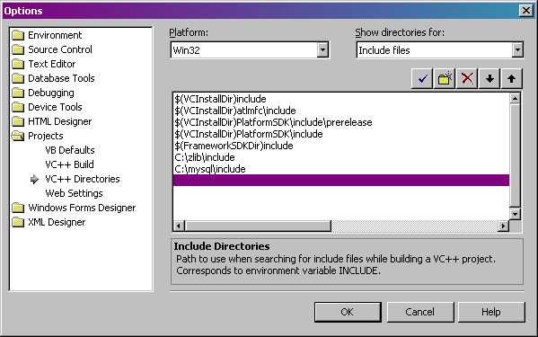
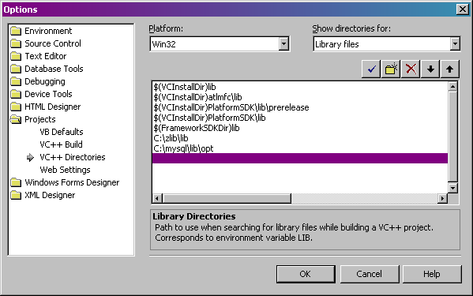
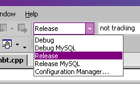

If you want to run BNBT 'as is' without making any changes to the source code, then you don't need to compile anything; precompiled binaries have been provided for you (BNBT.exe and BNBTMySQL.exe). If you want to make changes to the source code, you will need a compiler such as Microsoft Visual C++ .NET (recommended) or MinGW (which comes with Dev-C++, an excellent IDE). You will also need zlib 1.2.1 or newer and if you wish to compile a binary with MySQL support you will also need MySQL 4.0 or newer.
Step 1 (install zlib): To install zlib, simply download zlib 1.2.1 or newer, compiled DLL distribution and extract it to any folder (for example, C:\zlib - I will call this zlibdir). You will add this folder to your compiler's search paths later.
Step 2 (install MySQL): You only need to install MySQL if you wish to compile a binary with MySQL support. To install MySQL, simply download MySQL 4.0 or newer, Windows distribution and extract it to any folder (for example, C:\MySQL - I will call this mysqldir). You will add this folder to your compiler's search paths later.
Microsoft Visual C++ .NET is the recommended compiler for BNBT (the precompiled binaries were compiled with Microsoft Visual C++ .NET). If you haven't already setup your search paths, you should do so now,
Step 3 for MSVC++ .NET (setup include search paths): Click on the 'Tools' menu and select the 'Options' item. Click on the 'Projects' folder and select the 'VC++ Directories' item. Choose 'Include files' from the dropdown menu and click the 'New Line' icon (it looks like a folder) or double click on the first empty line. Type zlibdir\include (where zlibdir is the folder referenced in step 1) and press enter. If you wish to compile a binary with MySQL support, add another line and type mysqldir\include (where mysqldir is the folder referenced in step 2) and press enter.
Step 4 for MSVC++ .NET (setup library search paths): Click on the 'Tools' menu and select the 'Options' item. Click on the 'Projects' folder and select the 'VC++ Directories' item. Choose 'Library files' from the dropdown menu and click the 'New Line' icon (it looks like a folder) or double click on the first empty line. Type zlibdir\lib (where zlibdir is the folder referenced in step 1) and press enter. If you wish to compile a binary with MySQL support, add another line and type mysqldir\lib\opt (where mysqldir is the folder referenced in step 2) and press enter.
Step 5 for MSVC++ .NET (compile): To compile BNBT, simply open the BNBT.sln solution file in the bnbtdir\src folder (where bnbtdir is the folder you extracted BNBT to). If you wish to compile a release binary, make sure the 'Release' target is selected as shown below. If you wish to compile a debug binary, make sure the 'Debug' target is selected. If you wish to compile a binary with MySQL support, select the desired MySQL target.
Once you’ve selected a target, click on the 'Build Solution' button or click on the 'Build' menu and select the 'Build Solution' item. Microsoft Visual C++ .NET will compile a BNBT.exe or BNBTMySQL.exe binary in the bnbtdir\src folder.
TODO